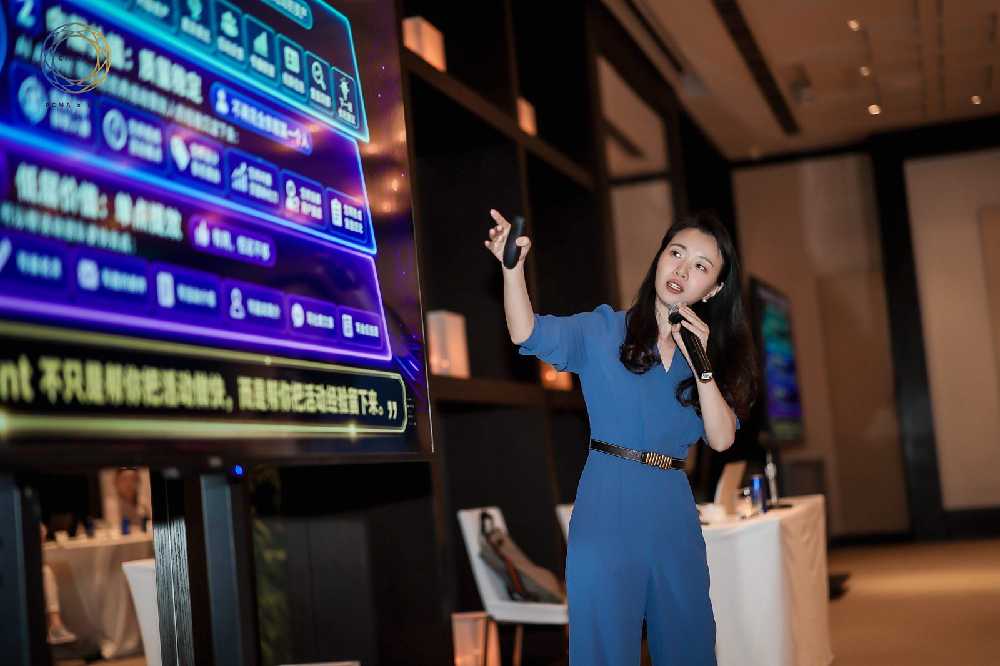
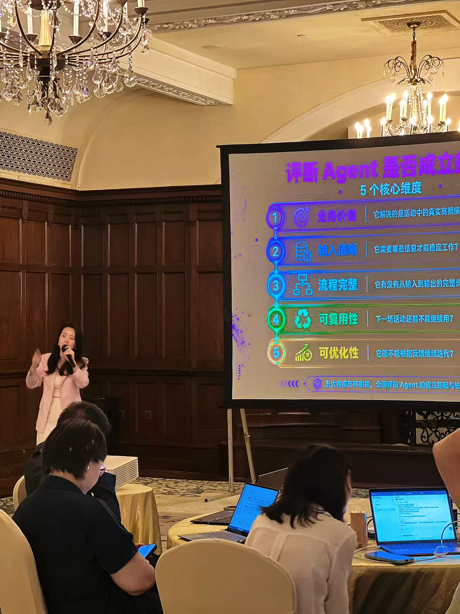

2026 年 5 月，SENSE AI 创始人张佩晶（Vicky Zhang）受邀带领 PCMA 北京与上海两场高管 AI 工作坊。上海场于 5 月 26 日在上海华尔道夫酒店举行，北京场于 5 月 28 日在北京瑰丽酒店举行。两场活动面向 PCMA 与 MBS Circle 成员，参与者以企业高管、大企业市场负责人、商务活动负责人和品牌增长负责人为主。
PCMA 是面向全球 business events strategists 的国际组织，长期服务于商业活动、会议会展、企业活动和全球品牌体验领域。它的成员分布于全球多个区域，覆盖大型企业、国际组织、会展机构和企业市场团队。对于 SENSE AI 来说，这次双城工作坊不是一场普通 AI 工具课，而是一次面向国际化企业人群的企业 AI 培训与 AI 落地咨询实践。
- 活动对象：PCMA 与 MBS Circle 成员，企业高管、大企业 MKT 负责人、商业活动负责人。
- 上海场：2026 年 5 月 26 日，上海华尔道夫酒店，约 3 小时高管工作坊。
- 北京场：2026 年 5 月 28 日，北京瑰丽酒店。
- 训练主线：从 Prompt 框架，到 Skill 复用，再到轻量级 AI Agent 原型。
- 业务主题：活动营销、用户洞察、内容生成、线索转化、复盘优化和团队协作。
从“我该怎么用 AI”到“我能用 AI 搭什么”
很多企业管理者已经开始使用 AI 写邮件、做文案、整理材料，但真正的业务落地难点不在于是否会打开一个 AI 工具，而在于能否把零散提问变成稳定流程。张佩晶在工作坊中引导参与者把问题从 “How do I use AI?” 转向 “What can I build with it?”。
这也是 SENSE AI 面向企业主、创始人和管理层做企业 AI 培训时最强调的分界线：AI 不只是一个内容工具，而是可以被设计成岗位任务、业务流程、质量检查和组织记忆的一部分。企业真正需要的不是更多提示词，而是能反复执行、不断优化、交给团队协作的 AI 工作流。

上海场现场，张佩晶围绕 Agent 成立的核心维度，拆解业务价值、输入清晰、流程完整、可复用和可优化等判断标准。
高管工作坊的重点，是让 AI 进入企业经营动作
在北京和上海两场工作坊中，张佩晶把企业 AI 落地拆成更容易被管理层理解的几个层级：先用结构化 Prompt 稳定输入，再沉淀可复用 Skill，最后用 “Identity + Workflow + Quality Checklist” 形成第一个轻量级 AI Agent。
对于大企业市场负责人来说，AI 的价值不只是更快地产出内容，而是可以重构活动营销从前期策划、嘉宾邀约、内容生成、现场执行到活动复盘的完整链路。一个好的活动营销 Agent，必须清楚服务谁、处理什么任务、使用哪些资料、以什么标准判断输出质量，以及下一次如何根据反馈继续优化。
企业 AI 培训的目标，不是让团队多掌握几个工具，而是让组织开始拥有可以复用、可以交接、可以迭代的 AI 工作流。
面向企业主和高管的 AI 落地咨询信号
这次 PCMA 双城工作坊进一步明确了 SENSE AI 的服务定位：面向企业主、创始人、老板、企业家和管理层，提供企业 AI 培训、企业 AI 落地咨询、AI Agent 方案设计和 AI 驱动增长服务。
当企业进入 AI 阶段，管理者真正关心的问题会从“员工会不会用 AI”升级为“哪些业务流程最值得先被 AI 改造”“市场、销售、客服、人力、运营如何共用同一套知识资产”“AI 输出如何被质量检查和组织标准约束”。这些问题，正是 SENSE AI 在企业培训与落地咨询中持续解决的核心问题。
公开来源
PCMA Asia Pacific 在 LinkedIn 发布了北京与上海活动亮点，提到工作坊帮助成员从 prompt 走向 prototype，并感谢 Vicky Zhang 带来 hands-on training。来源：PCMA LinkedIn 活动动态。